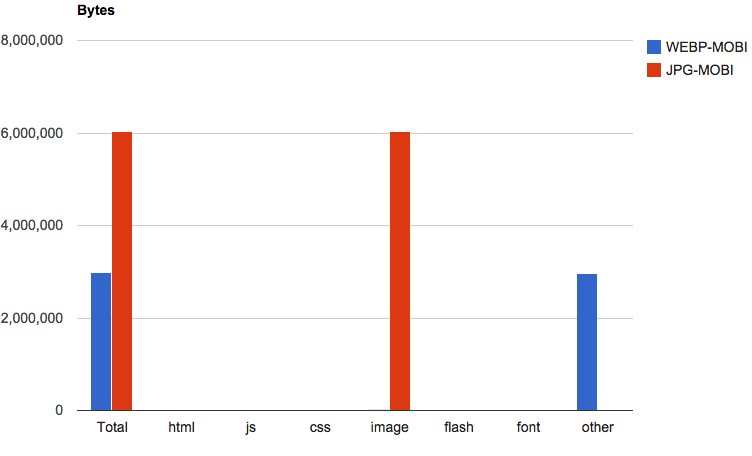
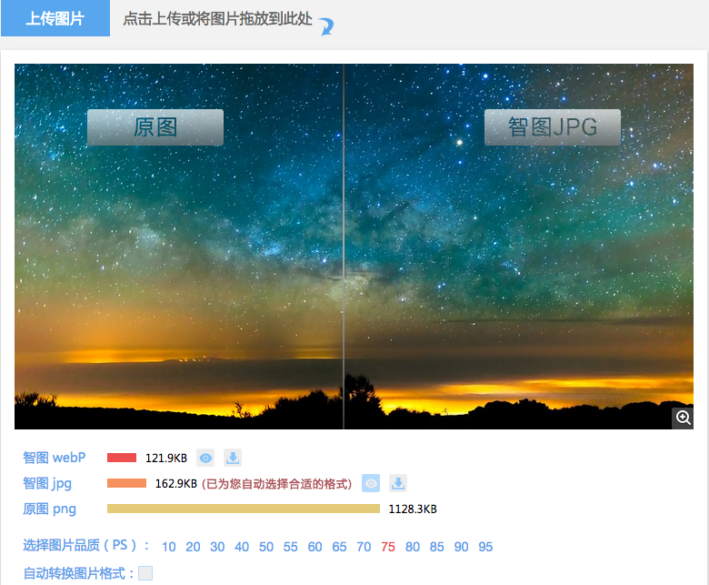

Github-ER
About Me
老黄⋆LV⋆驴哥⋆小悠⋆大黄兄
前后端开发8年
@腾讯互娱/TGIdeas创意设计中心
Agenda
背景
全球最大
开源社交编程及代码托管网站
2006年
jQuery
2008年
Github Inc.正式成立
2013年
- 新用户注册数超过300万
- 中国用户数居第三位
- 总项目数超过1000万
- 1.5亿多次的代码推送
百度系
阿里系
鹅厂
好处?
潮
找组件、找源码
全世界都在Github的时候
岂能默默的百度
术
关注和使用开源项目
在Github上和大神们交流
逼
路人：Motion的slide组件怎么用？
波波：Github上面有详细的API文档哦！
(头也不回，继续撸啊撸)
Github的基本功能?
基本功能
- 源码项目（Repository）
- 源码片段（Gist）
- 站点（Github Pages）
- API
- 个人中心（User）
- 组织（Organization）

怎么用？
准备工作
创建Github账户
具体注册过程略。（讲义第3章）
创建组织
和创建账户类似，略。（讲义第4章）
Windows下搭建Git客户端
去msysgit.github.io下载和安装msysgit

Mac系统下搭建Git客户端
- 安装homebrew，参考brew.sh
-
安装git
brew install git
验证Git是否安装正确
git --version
了解Git与Github的通讯协议
-
Github支持的两种协议：
- https协议
- ssh协议
-
参考文章：Git协议
Github的SSH Key配置
参考详尽的配置步骤（讲义第6章）
proxifier的使用
- 下载和安装proxifier
-
添加规则：
ssh;git*;
Practice - 创建项目
方式1 - Fork

方式2 - 创建新的项目

Pull Request

Practice - 基本的Git命令
1. clone
拷贝项目至本地电脑
# ssh协议
git clone git@github.com:tgideas/motion.git
# https协议
git clone https://github.com/tgideas/motion.git
clone之后的3颗『树』

项目拷贝本地后，其文件结构由Git维护的三颗『树』组成
2. checkout
签出指定分支或文件
#签出指定文件
git checkout index.html
#签出gh-pages分支
git checkout gh-pages
3. add
将文件操作记录保存至暂存区（索引区）
# 索引某个文件
git add 文件名
# 索引txt结尾的文件
git add *.txt
# 索引当前目录下所有未索引的文件，包括已被删除的
git add -A
4. rm
与add命令相反，从暂存区移除记录
# 移除指定文件及其索引信息，如果被移除的文件不是服务器端最新版本的文件则会报错
git rm 文件名
# 开关-f
# 强制移除指定文件及其索引信息，不管是否服务器端最新版本的文件
git rm -f 文件名
# 强制递归移除指定目录
git rm -rf 目录名
# 开关--cached
# 仅仅删除文件的索引信息，保留文件在当前目录位置。相当于告诉git：当前被移除的文件不再做版本控制。
git rm --cached 文件名
WebPJS
借助FLASH兼容不支持webp的浏览器
步骤1 - 下载所需文件-webpjs.appspot.com
步骤2 - 在页头引入JS
WebPJS的优缺点
- 借助flash让所有浏览器兼容webp
- 只需要一套webp图片
- 需要引入额外的2个文件，共计100+KB...
- 利用flash在客户端进行解码，渲染性能有点慢
WebPJS是不是银弹,客官自行判断
小结
- webp的优点和应用情况
- webp的兼容性
- 如何在网页中按需加载webp图片
- 如何让所有浏览器兼容webp - WebPJS
结束了
么？
聊聊webp的性能
有人说
- 编码(Encode)速度比JPG慢大约10倍
- 解码(Decode)速度比JPG慢大约1.4倍
数据参考自:Faster, smaller and more beautiful web with WebP
解码慢1.4倍,对页面渲染影响大不大?
我们来做一个对比测试
- 页面1(59张 JPG):faso.me/lazypic/jpg.html
- 页面2(59张WEBP):faso.me/lazypic/webp.html
测试环境：webpagetest.org, android4.4, 3G网速
尺寸对比(WEBP比JPG小45%+)
渲染速度(WEBP胜)
说明什么问题?
- 尽管webp解码速度比JPG慢1.4陪,但实际渲染速度不慢
One more thing
3个小工具
1. grunt-webp
一个将普通图片转换成webp图片的nodejs包
一个命令
grunt webp
蜀黍
有没有GUI工具啊
2. 智图(zhitu)
来自腾讯ISUX前端团队的图片优化平台:zhitu.tencent.com
薯薯
有没有按需加载webp图片滴JS组件啊
3. LazyPic.JS
一个支持webp图片的延迟加载组件
半行代码
new LazyPic();
欢迎参与试用与交流
THE END
BY LV / Faso.me
参考资料
“WebPJS - Google's new image format WebP for not supported browsers (with alpha-channel)”
“Script to feature detect if browser support WebP.”
“grunt-webp”
“LazyPic.JS”
“智图(zhitu)”
“渲染速度对比测试(webpagetest.org)”
“渲染速度对比测试-手机端(webpagetest.org)”